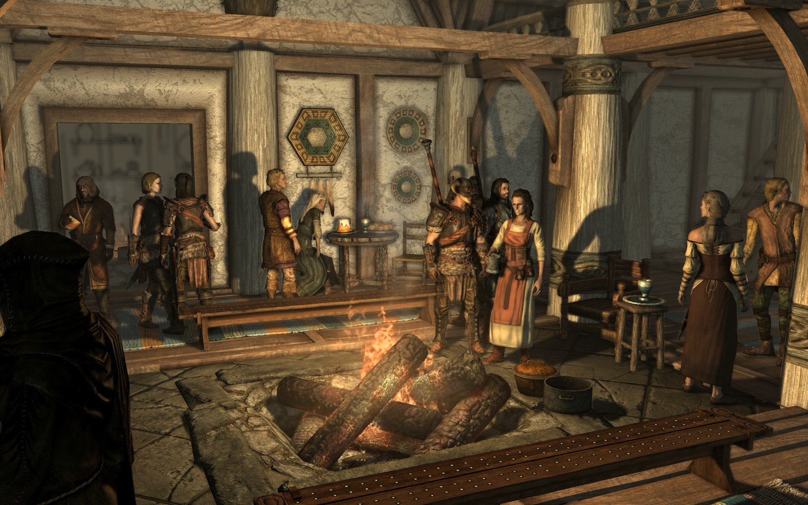
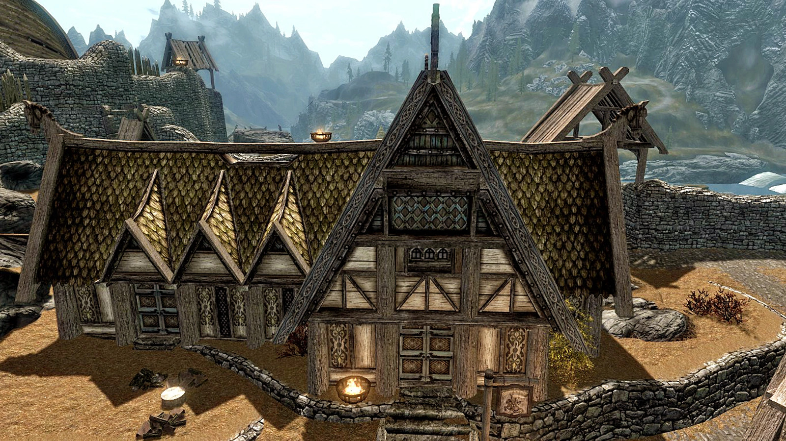

<!DOCTYPE html>
<html lang="en">
<head>
    <meta charset="UTF-8">
    <meta http-equiv="X-UA-Compatible" content="IE=edge">
    <meta name="viewport" content="width=device-width, initial-scale=1.0">
    <link rel="stylesheet" href="./style.css">
    <title>Restaurant page</title>
</head>
<body>
    <div id="content">
        <!-- <header>
            <div class="navitem active"><span>Home</span></div>
            <div class="navitem"><span>Menu</span></div>
            <div class="navitem"><span>Contact</span></div>
        </header>
        <div class="content-home">
            <h1>Welcome to the Bannered Mare!</h1>
            <div class="paragraph">
                Come inside and warm up by the fire! Serving the best mead in Skyrim, The Bannered Mare is the heart of Whiterun's night-life. You will never suffer from boredom: the city's finest folks spend their nights in our establishment! If you enjoy music, just say the word and Mikael the bard shall sing the best odes and tales you'll hear all around Skyrim. Or if you are proud of your fistfighting, Uthgerd the Unbroken is always looking for challengers! And who knows, you might get to chug a drink or two with the legendary Dovahkiin himself...
            </div>
            
            <div class="paragraph">
                <h3>Services</h3>
                <ul>
                    <li>Top-quality mead in every quantity</li>
                    <li>Fine food</li>
                    <li>Music by Mikael the bard</li>
                    <li>Rent a comfy bed for the night</li>
                </ul>
            </div>
            
            
        </div>
        <footer>
            <span>Copyright and stuff, 2022</span>
        </footer> -->
    </div>


    <script src="./main.js"></script>
</body>
</html>